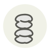

Mekabu ✦
Mékabu
| Latin name | Undaria pinnatifida (sporophyll) |
|---|---|
| Family | Seaweed |
| Origin | Sanriku coast, Japan |
| Season (France) | February – April |
| Flavour | Marine · Umami · Briny · Mild |
| Typical price (France) | 30–60 €/kg |
What it is
Mekabu is the frilled sporophyll at the foot of a wakame plant, the part that makes and releases the spores; it is cut away at harvest and sold on its own. Chopped, it turns viscous — fucoidan and alginate escaping from cut cells — and the finer the knife work, the thicker the mass gets.
In the kitchen
Ten seconds in boiling water and it flips from brown to a violent green; drop it straight into iced water, then chop. Dress with rice vinegar and soy at the last moment — heat and waiting both thin the texture.
Goes with
Rice vinegar Soy sauce Ginger Daikon Natto Katsuobushi Cucumber
Same species
In season alongside
Tiger pufferfish (torafugu) Royal kombu Konowata Kuchiko (dried sea cucumber ovaries) Mozuku Mussel
Something wrong here, or missing? Tell us